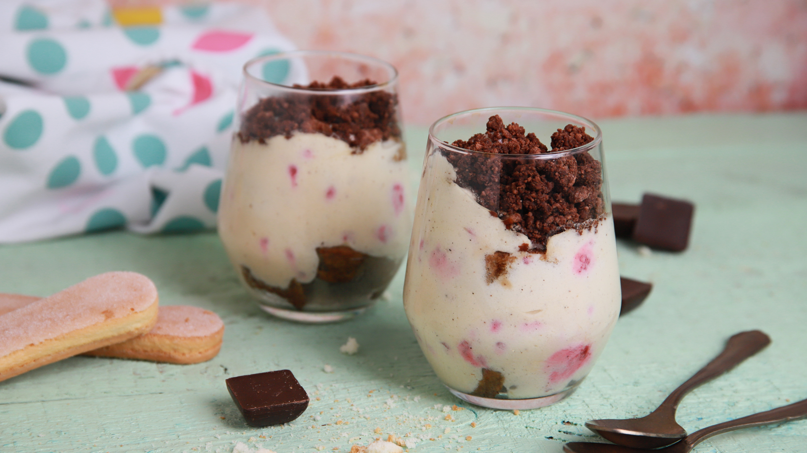

-
Vaníliás kifli
 Hozzávalók:
Hozzávalók:- 20 dkg liszt
- 7 dkg darált mandula
- 15 dkg vaj
- 3 dkg porcukor
Elkészítési idő:45 percAdag:24Elkészítés:A hozzávalókat gyors mozdulatokkal összegyúrjuk, és hűtőszekrénybe tesszük, ha egyből nem sütjük ki.
A tésztából kis darabokat csípünk le, azokból gömböket készítünk, majd nudlikat formázunk belőle és abból kiflit.
Sütőpapírral bélelt tepsibe tesszük mind, és 180 fokra előmelegített sütőben 13-15 perc alatt megsütjük, amíg egy kicsi színt nem kapnak a kiflik végei. Még melegen megforgatjuk a vaníliás porcukorban.
-
Sütőtökös-csokis brownieHozzávalók:
- 8.5 dkg vaj
- 20 dkg étcsokoládé
- 13 dkg cukor
- 2 db tojás
- 1 tk vanília
- 7 dkg liszt
- 1 ek kakaópor
- 1 csipet só
- Sütőtök krém:
- 20 dkg sütőtök
- 2 ek barna cukor
- 25 dkg Mascarpone
Elkészítési idő:60 percAdag:10Elkészítés:A sütőtököt kevés vajon, 1 púpozott evőkanál barna cukorral puhára pároljuk. Ha puhára párolódott, a mascarponéval együtt krémesre turmixoljuk.
Vízgőz fölött a vajat az étcsokival összeolvasztjuk. A cukrot és tojást is hozzáadjuk. Az egészet alaposan összedolgozzuk. A lisztet és a kakaóport a masszába szitáljuk. Vaníliával és egy csipet cukorral ízesítjük. Belekeverjük a csoki darabkákat is. Sütőpapírral bélelt formába tesszük a brownie masszát. Elsimítjük, majd a tökkrémet is rákanalazzuk. Picit megkeverjük a felszínét, hogy ‘márványos’ legyen.
180 fokos sütőben kb 40 percig sütjük.Hagyjuk 15 percet hűlni, majd szeleteljük.
Csokoládéfelfújt körtévelHozzávalók:- 7.5 dkg étcsokoládé
- 5 dkg liszt + a formához
- 1 tk kakaópor
- 3 db tojás
- 5 dkg puha vaj + a formához
- 5 dkg kristálycukor
- 1 tasak vaníliás cukor
- só
- 4 db kisebb körte
Elkészítési idő:30 percAdag:4Elkészítés:A csokoládét felapríjuk, és kis lábasba téve forró vízgőz felett megolvasztjuk, majd hagyjuk kissé hűlni. A lisztet és a kakaót egy tálba szitáljuk. A tojásokat szétválasztjuk. A vajat habosra keverjük a cukorral és a megolvasztott csokival.
A tojások sárgáját egyenként a csokis masszához adjuk. A fehérjét kemény habbá verjük a vaníliás cukorral és egy csipet sóval. A fehérjehabot és a lisztes keveréket felváltva adjuk a csokis masszához. A megmosott körtéket meghámozzuk, levágjuk le az aljukat, a magházukat kifúrjuk.
A felfújtmasszát kivajazott és kilisztezett tűzálló tálkákba kanalazzuk, majd belenyomunk mindbe 1-1 db körtét. 200 fokos sütőben 20-25 perc alatt megsütjük.
Málnás tiramisu csokimorzsávalHozzávalók:- 6 db tojás
- 15 dkg kristálycukor
- 1 csipet só
- 50 dkg Mascarpone
- 50 dkg fagyasztott málna
- 1 cl whisky/rum
- 1 csom babapiskóta
- meleg kávé
- 80 dkg kristálycukor
- 30g víz
- 4 dkg magas kakaótartalmú étcsokoládé
Elkészítési idő:30 percAdag:4Elkészítés:A friss tojásokat szétválasztjuk. A sárgájákat nagyon habosra, fehéredésig verjük a cukorral és csipet sóval. A mascarponét kikeverjük külön és ezt a kettőt egybe forgatjuk, picit óvatosabb mozdulatokkal.
A kiengedett, lecsöpögtetett málnákat hozzáadjuk a krémhez, hozzácsurgatunk pár csepp whiskyt, rumot vagy konyakot és átkeverjük 2-3-szor. A fehérjét tartós habbá verjük és végül a mascarponés alappal vegyítjük, vigyázva, hogy a hab ne törjön.
A meleg kávéba belemártogatjuk a piskótákat és szétosztjuk a pohár fenekén. Rákanalazunk egy kis krémet, aztán újabb piskóta réteg és megint egy kis krém következik.
A csokiropogóshoz a cukrot a vízzel feltesszük főni. 132 fokig hevítjük, majd lehúzzuk a tűzről és beletesszük az étcsokit. Egy fakanállal addig keverjük az egészet, amíg a csoki el nem olvad és por állagú lesz az egész. Végül megszórjuk vele a desszert tetejét.A csokiropogóshoz a cukrot a vízzel feltesszük főni. 132 fokig hevítjük, majd lehúzzuk a tűzről és beletesszük az étcsokit. Egy fakanállal addig keverjük az egészet, amíg a csoki el nem olvad és por állagú lesz az egész. Végül megszórjuk vele a desszert tetejét.
Csokikrémes palacsinta Hozzávalók:
Hozzávalók:- A palacsintához:
- 25 dkg liszt
- 3 dl tej
- 2 dl szóda vagy szénsavas ásványvíz
- 2 db tojás
- olaj
- 1 csipet só
- A csokikrémhez
- 2 db tojás
- 1 ek liszt
- 2 ek kakaó
- 20 dkg kristálycukor
- 3 dl tej (+ a felöntéshez)
- 1 csomag vaníliás cukor
- 10 dkg vaj
Elkészítési idő:60 percElkészítés:Egy nagy tálban összekeverjük a tejet, a tojást, a sót, a szódát és az átszitált lisztet, és egy habverővel simára dolgozzuk.
Pihentetjük 30 percig, majd egy kiolajozott serpenyőben egyesével kisütjük a palacsintákat a szokásos módon.
A csokikrémhez a tojást a liszttel, a kakaóval, a cukorral és egy kevés tejjel csomómentesre keverjük. A tejet felfőzzük a vaníliás cukorral, majd hozzáöntjük a kakaós keveréket. Állandó keverés mellett felfőzzük, majd belekeverjük a vajat, és hagyjuk kihűlni. Végül megtöltjük vele a palacsintákat. Tölteléknek készíthetünk akár konyakos csokiszószt is.